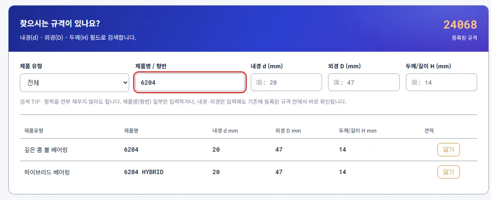
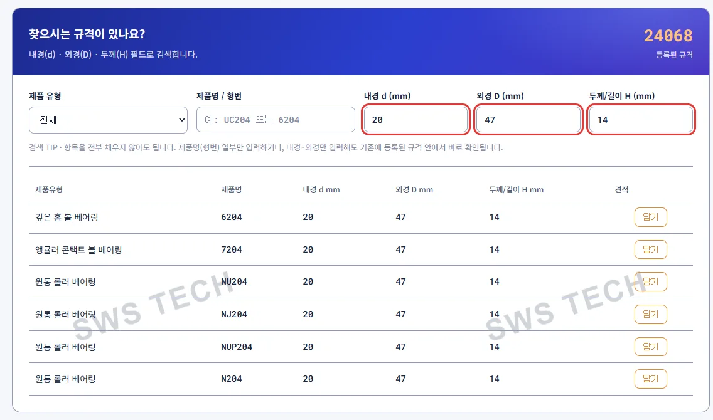
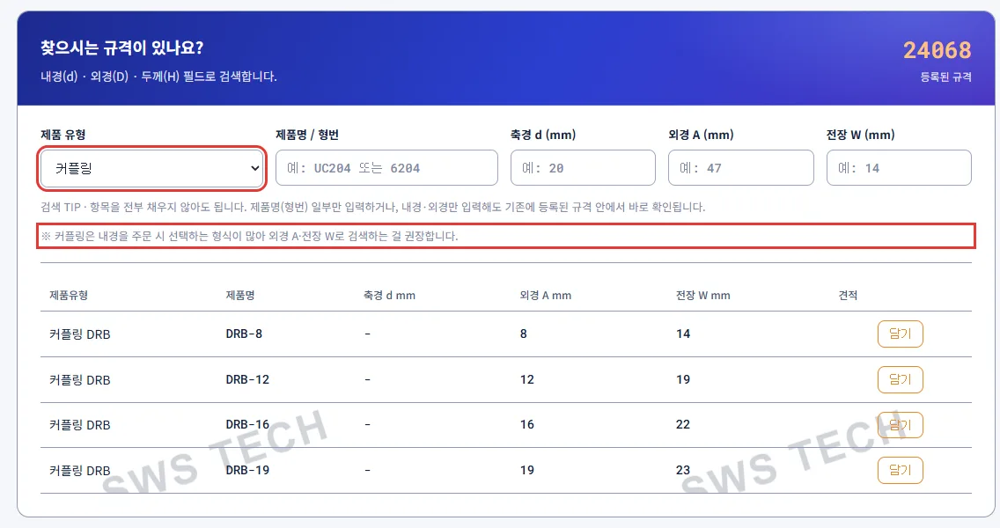
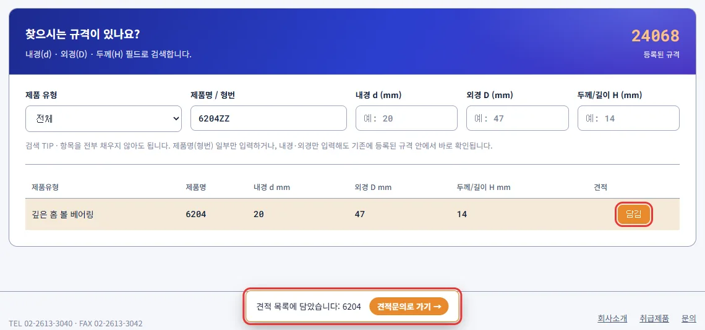
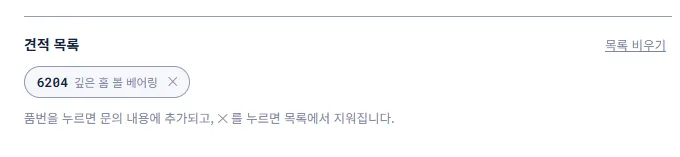

Notice
2026-11-14
규격검색에서 형번이나 치수로 SWS TECH에 등록된 규격을 찾고, 찾은 품번을 견적 목록에 담아 바로 문의할 수 있습니다.
위쪽 메뉴의 [규격검색]을 누르거나, 첫 화면의 [규격으로 제품 찾기]를 누릅니다.
[제품명 / 형번] 칸에 형번을 입력하면 바로 결과가 나옵니다. 형번 일부만 입력해도 되고, 띄어쓰기 · 하이픈은 무시합니다. 6204ZZ처럼 실드 기호를 붙여 입력해도 기본 형번(6204)으로 찾아 줍니다.

형번을 모르면 내경 d · 외경 D · 두께 H 중 아는 값만 입력합니다. 입력한 값과 0.5mm 이내로 차이 나는 규격까지 함께 찾습니다.

[제품 유형]을 고르면 그 제품만 보이고, 칸 이름도 그 제품의 치수 기준으로 바뀝니다. 예: 커플링 = 축경 d · 외경 A · 전장 W

결과의 [담기]를 누르면 견적 목록에 담기고, 아래 알림의 [견적문의로 가기]를 누르면 견적문의 페이지로 이동합니다.

견적문의 페이지의 견적 목록에서 품번을 누르면 문의 내용에 추가되고, ×를 누르면 목록에서 지워집니다.
